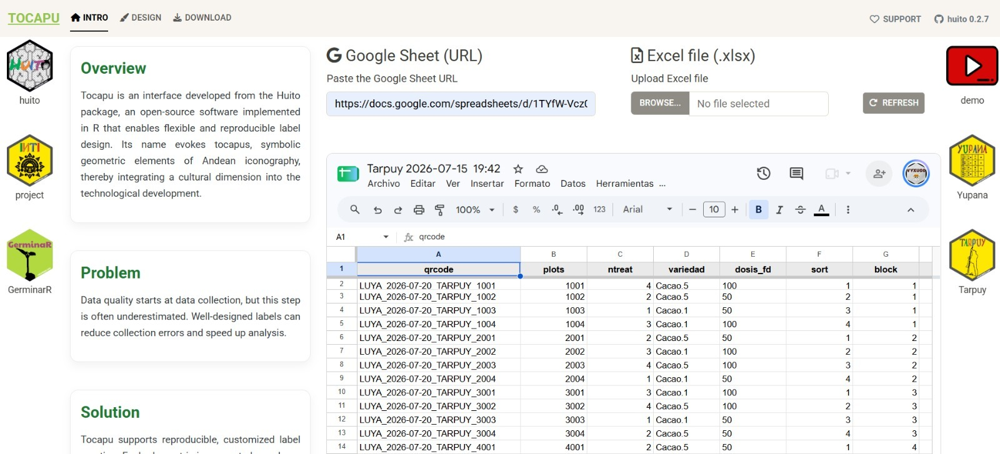
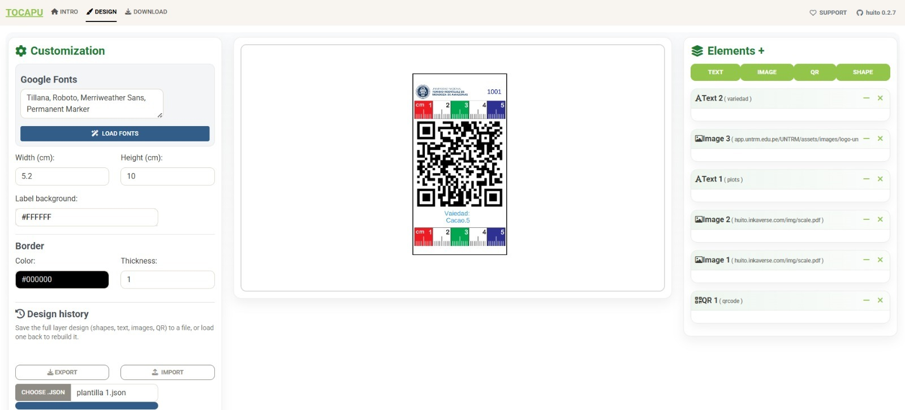
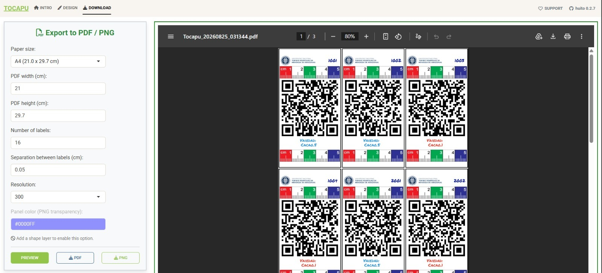
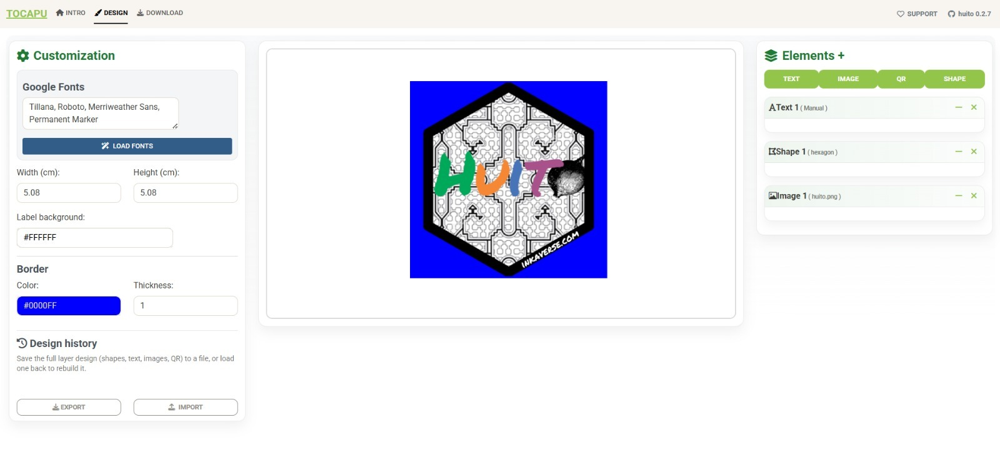
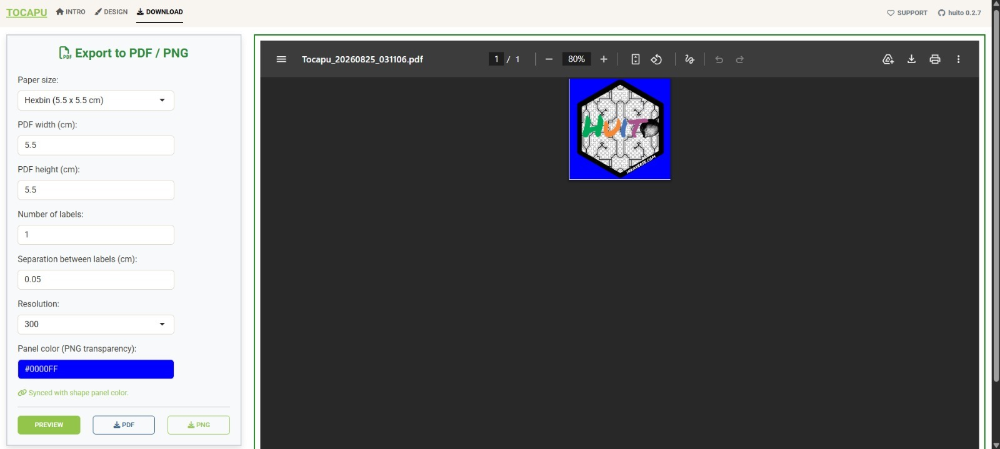

Tocapu for R is an interface developed from the huito package, an open-source R package that enables flexible and reproducible label design. Its name evokes tocapus, symbolic geometric elements of Andean iconography, integrating a cultural dimension into the technological development.
Data quality starts at data collection, but this step is often underestimated. Well-designed labels can reduce collection errors and speed up analysis. Tocapu supports reproducible, customized label creation: each element (text, image, QR code or shape) is incorporated as an independent layer, so labels can be linked to a fieldbook (one label per row, e.g. for field tags) or designed freely as a standalone template (e.g. a logo or sticker), without any data behind it.
 Demo
Demo
 Tocapu
Tocapu
App modules
The application is composed of three tabs. The “Design” tab can be used in two ways, depending on whether the labels are linked to a fieldbook or built as a standalone design.
| Tab | Description |
|---|---|
| Intro | Import the fieldbook (Google Sheet URL or Excel file). Only required for data-driven labels. |
| Design | Build the label layout with layers (text, image, QR, shape). Two use cases: data-driven labels (fields bound to fieldbook columns) or shapes / sticker design (freeform, manually written elements). Either way, the design can be saved and reloaded as a .json template. |
| Download | Preview and export the final labels to PDF or PNG, in any paper size, with the number of copies and spacing you need. |
Data processing
Fieldbook
If your labels will be linked to a database, go to the “Intro” tab first and load your fieldbook. Tocapu reads it directly from a Google Sheet URL or from an uploaded Excel (.xlsx) file.
Each row of the sheet becomes one label, and each column (e.g. qrcode, plots, ntreat, variedad, dosis_fd, sort, block) becomes a data field that can be linked to a text or QR element in the “Design” tab. If you only want to build a standalone design (a logo, a sticker), this step is not necessary — you can go directly to “Design”.
Label design
The “Design” tab has three panels:
- Customization (left): Google Fonts to load, label width/height (cm), background color and border (color and thickness).
- Canvas (center): a live preview of the label, showing exactly how it will look once exported.
-
Elements (right): the layers that make up the label. Four types are available:
-
TEXT— a fixed, manually written text, or a field mapped from the fieldbook (e.g.variedad,plots). -
IMAGE— a logo or picture, either uploaded or linked from a URL. -
QR— a QR code generated from a fieldbook column (e.g.qrcode). -
SHAPE— geometric shapes (rectangles, hexagons, etc.) used as backgrounds or decorative panels.
-
Layers can be reordered, resized and repositioned on the canvas, and each one can be deleted (✕) or hidden. Whether the design ends up being data-driven or a standalone shape/sticker just depends on which layers you add and whether you bind them to a fieldbook column or type them in manually.
Data-driven labels
When elements are bound to fieldbook columns, one label is generated per row of the data. A typical example combines a QR layer (bound to qrcode), one or two TEXT layers (e.g. plots, variedad) and an institutional IMAGE (logo), over a ruler-style background used to size specimens or samples in the field.

Export for labels
For field labels generated from a fieldbook, several copies are usually printed together on a standard sheet. Here 16 QR labels are laid out on an A4 (21 x 29.7 cm) page, each numbered sequentially from the data.

Shapes / sticker design
Because every element is an independent layer, Tocapu can also be used without any fieldbook, to build a standalone shape or sticker. In this example a SHAPE (hexagon) is used as a background panel, with an IMAGE layer and a manually written TEXT layer placed on top. This produces a single design, not one per row.

Design history
Whichever path you take, the full layer design (shapes, text, images, QR) can be saved as a .json template from Design history, and reloaded later (CHOOSE .JSON) to rebuild the exact same layout - useful for replicating a label across other experiments or trials, or reusing a sticker design, without redoing the layer setup each time.
Export for forms
For a standalone shape/sticker design, the paper size can be set to match the label exactly - here the predefined “Hexbin” preset (5.5 x 5.5 cm) - and exported as a single PNG, with the shape’s fill color used as the transparency panel.
